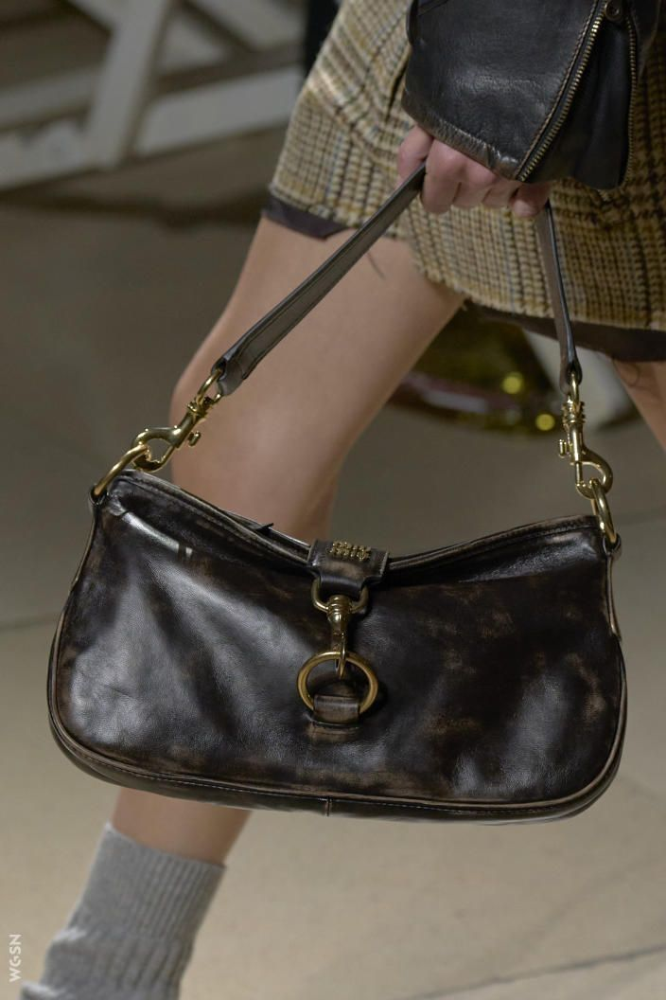

Proof that the smaller the shirt, the bigger the attitude.

Carries nothing but your Nokia and all your dreams. The original mic drop was just snapping a flip phone shut. Jeans cut so low they required constant tugging Track pants so plush they blurred the line between gym and glam. “Oversized tinted visors that made you look futuristic and anonymous. A bulky disc spinner that skipped if you dared to jog with it. A chunky point-and-shoot that immortalized red eyes and blurry nights out.